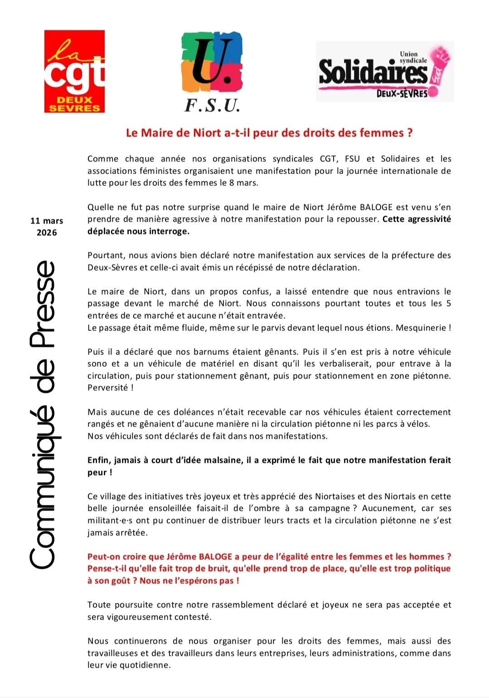

Communiqué intersyndical relayé
8 mars à Niort, le communiqué de la CGT, de la FSU et de Solidaires
Date de mise à jour indiquée par Facebook · 12 mars 2026
Repères éditoriaux
Nous relayons le communiqué du 11 mars de la CGT, de la FSU et de Solidaires des Deux-Sèvres. Les organisations reviennent sur la manifestation niortaise du 8 mars et contestent l’attitude du maire pendant le rassemblement. Elles réaffirment leur engagement pour les droits des femmes.
Texte de la publication · CGT 79 Deux-Sèvres
Nous ne nous laisserons pas intimider. Nous continuerons à lutter pour l'égalité entre les femmes et les hommes.

Sources
CGT 79 Deux-Sèvres · publication relayée par le PCF 79 · bibliothèque Facebook · AR-0002-FB-00841
À lire aussi · 8 mars. Le PCF met en avant le rôle des services publics locaux